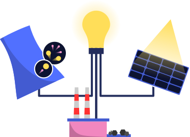
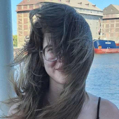
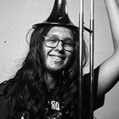
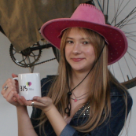
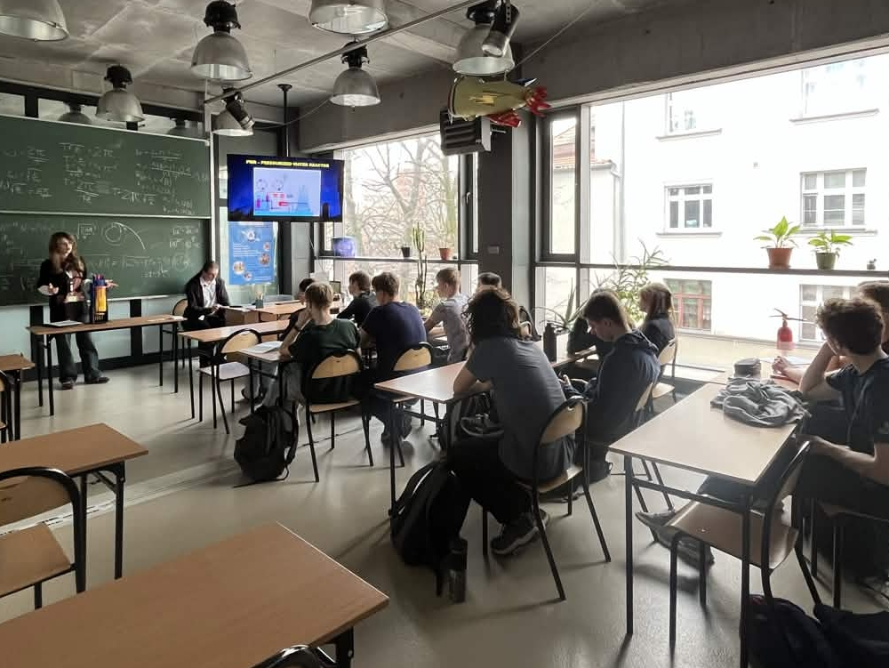
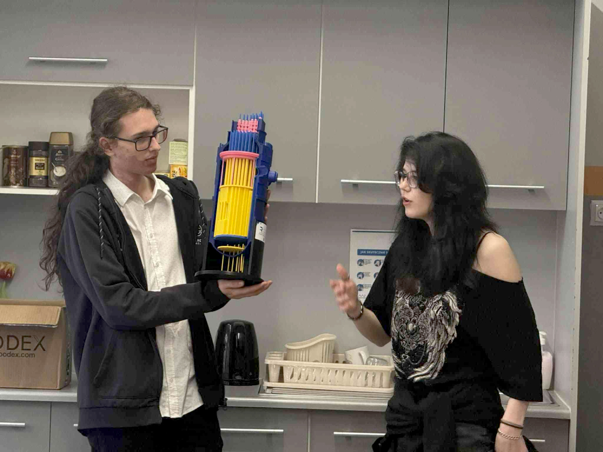
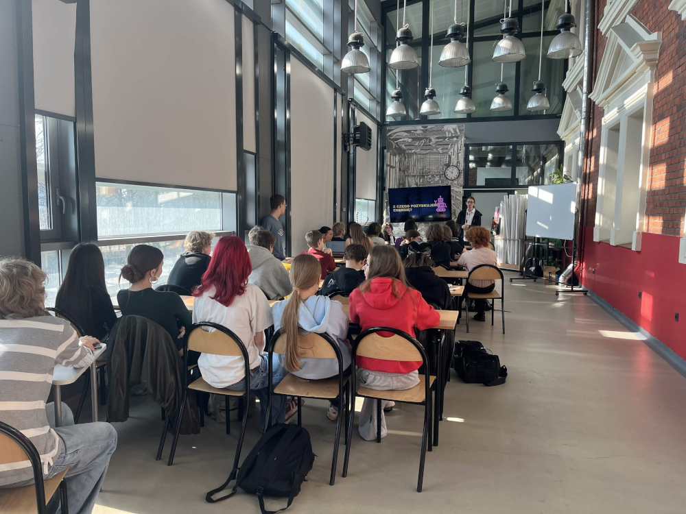
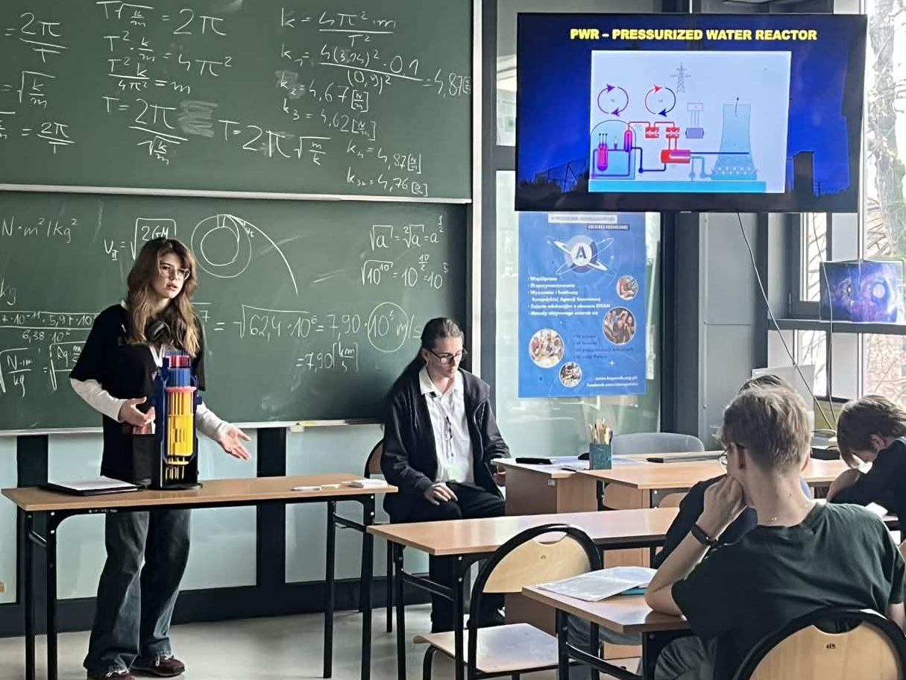
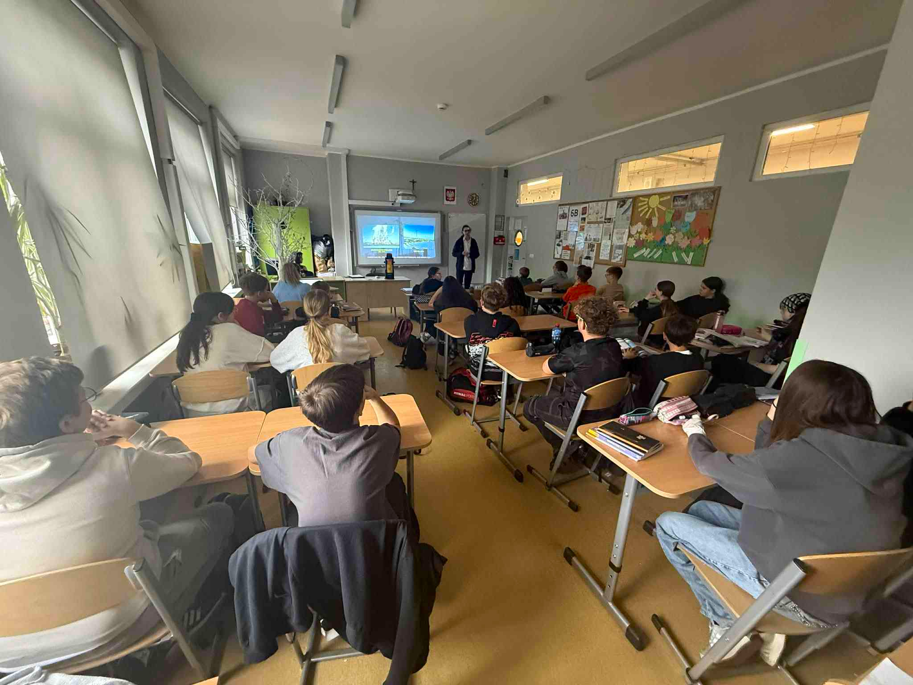
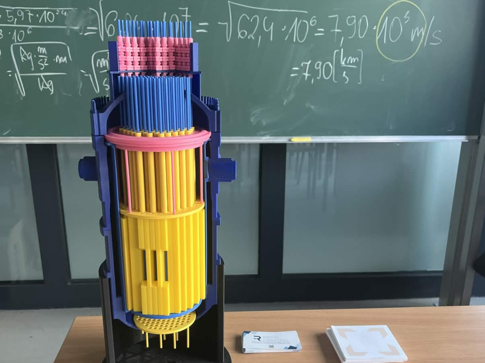

Energetyka jądrowa stale przewija się w mediach i polityce, jedak zbyt wiele osób wciąż nie rozumie jej znaczenia.
Edukujemy, tłumaczymy i rozwijamy świadomość energetyczną Gliwiczan. Działamy na platformach społecznościowych takich jak Instagram i TikTok, oraz "w terenie", prowadząc warsztaty dla uczniów.









